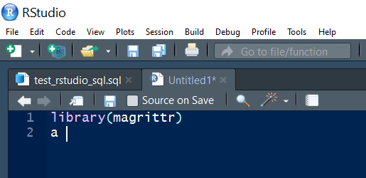
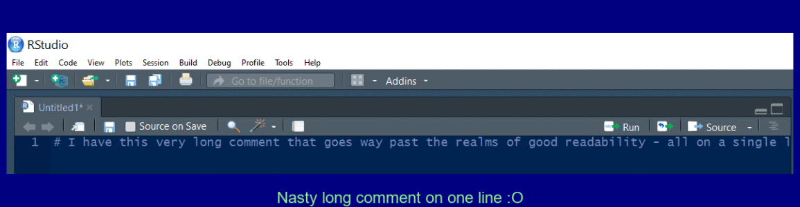
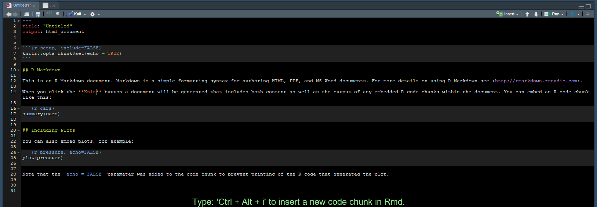
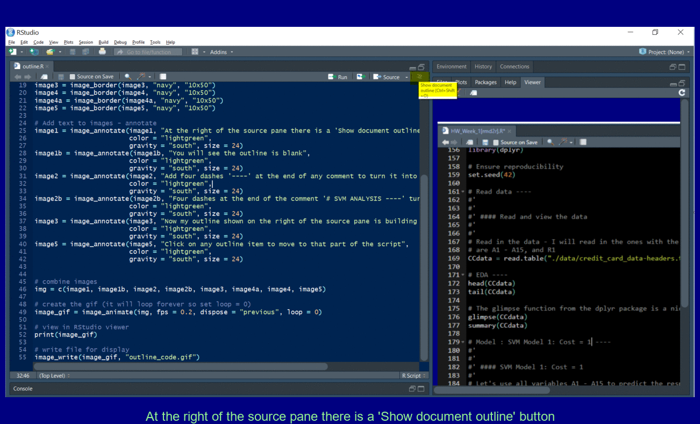
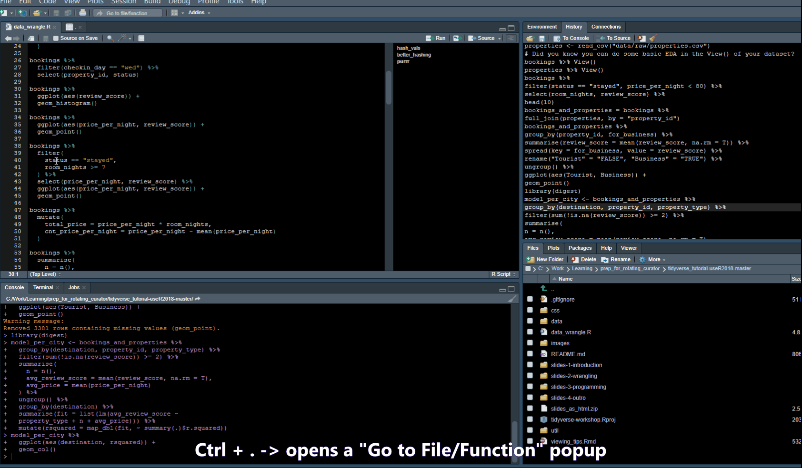
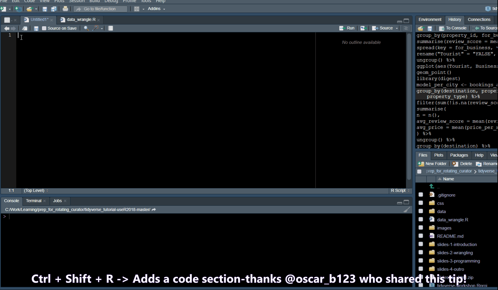
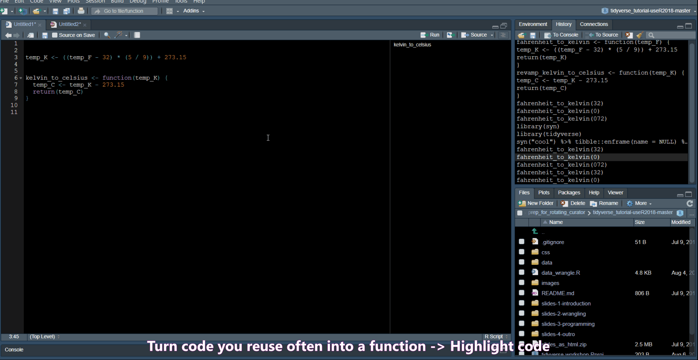
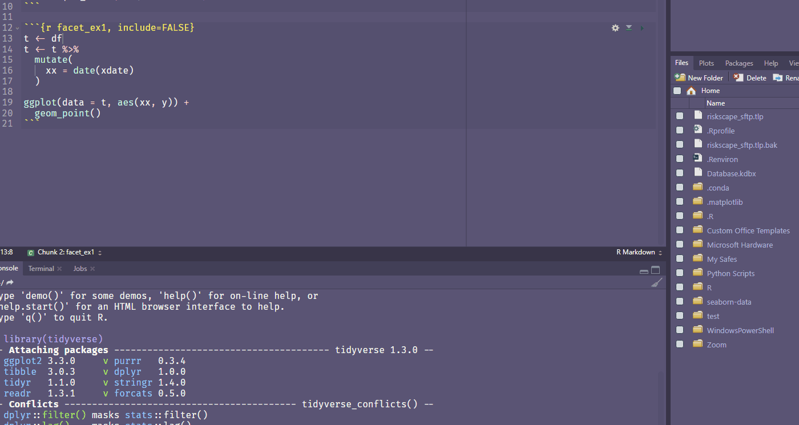
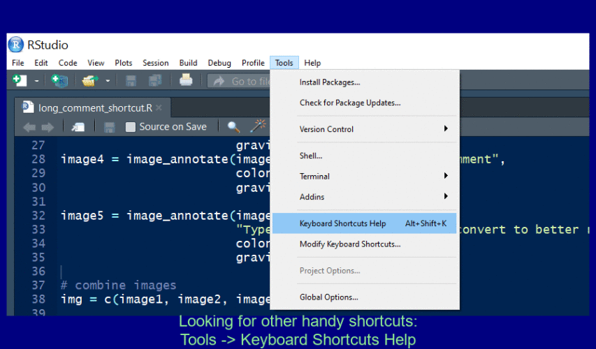
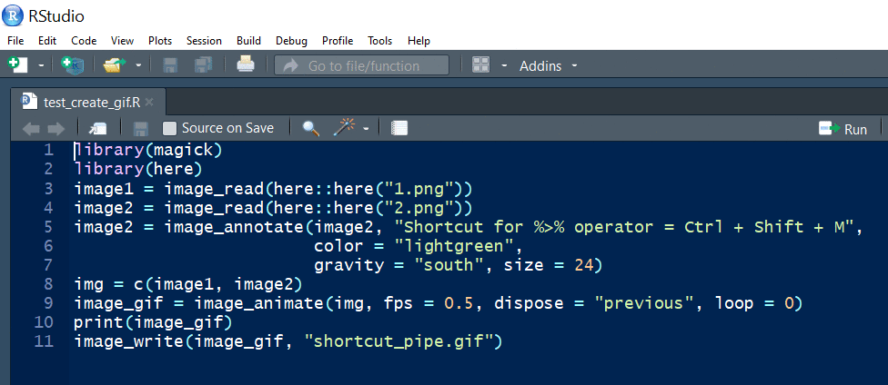

Chapter 4 - Workflow e.g. Scripts
Vebash Naidoo
10/10/2020
Last updated: 2020-10-31
Checks: 7 0
Knit directory: r4ds_book/
This reproducible R Markdown analysis was created with workflowr (version 1.6.2). The Checks tab describes the reproducibility checks that were applied when the results were created. The Past versions tab lists the development history.
Great! Since the R Markdown file has been committed to the Git repository, you know the exact version of the code that produced these results.
Great job! The global environment was empty. Objects defined in the global environment can affect the analysis in your R Markdown file in unknown ways. For reproduciblity it’s best to always run the code in an empty environment.
The command set.seed(20200814) was run prior to running the code in the R Markdown file. Setting a seed ensures that any results that rely on randomness, e.g. subsampling or permutations, are reproducible.
Great job! Recording the operating system, R version, and package versions is critical for reproducibility.
Nice! There were no cached chunks for this analysis, so you can be confident that you successfully produced the results during this run.
Great job! Using relative paths to the files within your workflowr project makes it easier to run your code on other machines.
Great! You are using Git for version control. Tracking code development and connecting the code version to the results is critical for reproducibility.
The results in this page were generated with repository version 72ad7d9. See the Past versions tab to see a history of the changes made to the R Markdown and HTML files.
Note that you need to be careful to ensure that all relevant files for the analysis have been committed to Git prior to generating the results (you can use wflow_publish or wflow_git_commit). workflowr only checks the R Markdown file, but you know if there are other scripts or data files that it depends on. Below is the status of the Git repository when the results were generated:
Ignored files:
Ignored: .Rproj.user/
Untracked files:
Untracked: analysis/images/
Untracked: code_snipp.txt
Note that any generated files, e.g. HTML, png, CSS, etc., are not included in this status report because it is ok for generated content to have uncommitted changes.
These are the previous versions of the repository in which changes were made to the R Markdown (analysis/ch4_scripts_ide.Rmd) and HTML (docs/ch4_scripts_ide.html) files. If you’ve configured a remote Git repository (see ?wflow_git_remote), click on the hyperlinks in the table below to view the files as they were in that past version.
| File | Version | Author | Date | Message |
|---|---|---|---|---|
| html | bdc0881 | sciencificity | 2020-10-26 | Build site. |
| html | 8224544 | sciencificity | 2020-10-26 | Build site. |
| html | 2f8dcc0 | sciencificity | 2020-10-25 | Build site. |
| html | 61e2324 | sciencificity | 2020-10-25 | Build site. |
| html | 570c0bb | sciencificity | 2020-10-22 | Build site. |
| html | cfbefe6 | sciencificity | 2020-10-21 | Build site. |
| html | 4497db4 | sciencificity | 2020-10-18 | Build site. |
| html | 1a3bebe | sciencificity | 2020-10-18 | Build site. |
| html | ce8c214 | sciencificity | 2020-10-16 | Build site. |
| html | 1fa6c06 | sciencificity | 2020-10-16 | Build site. |
| html | 9ae5861 | sciencificity | 2020-10-13 | Build site. |
| Rmd | d9de836 | sciencificity | 2020-10-13 | added more content Ch 3 |
| html | 76c2bc4 | sciencificity | 2020-10-10 | Build site. |
| html | 226cd16 | sciencificity | 2020-10-10 | Build site. |
| Rmd | ae71e8e | sciencificity | 2020-10-10 | added Ch 4 section |

My tips and tricks
Here are a few of my tips and tricks for improving my programming efficiency in R and RStudio which I use as an IDE.
<Disclaimer: I use a Windows PC>
I also tend to do two things:
- I always work in a Project (
File -> New Project ...) - I usually use RMarkdown files for my coding (
File -> New File -> R Markdown ...).
Some of the shortcuts below may seem foreign, I suggest checking out the ones that seem useful to you, and coming back once you’re further along in the book 💪.
Pipe shortcut
Use Ctrl + Shift + M to insert the pipe operator.

Create a multi line comment
Use Ctrl + Shift + / to reflow a long comment.

Create a code chunk in Rmd
Use Ctrl + Alt + i to create a new code chunk in an RMarkdown document.

Insert an outline in your file
Add four dashes ---- to create a new outline element for easy navigation.

Pull out Tabs

Find/Search
- Ctrl + . -> Opens a popup where you can search for functions in your script or Files in your folder
- Ctrl + Shift + F -> opens a “Find in Files” popup

Code snippets
In Tools -> Global Options -> Code you will find a list of code snippets.

History Commands
Ctrl + Up Arrow in the console shows you a list of your previous commands.

Miscellaneous
Extract Function allows you to turn code into a function.

Rename in scope
Ctrl + Shift + Alt + M allows you to rename a variable in scope.

Find your own fave shortcut
To open the Shortcuts menu hold down Alt + Shift + K

Diagnostics
The RStudio IDE has updates as time passes. Check out here for the one I looked at.
You can do a search in Google for RStudio diagnostics.
sessionInfo()R version 3.6.3 (2020-02-29)
Platform: x86_64-w64-mingw32/x64 (64-bit)
Running under: Windows 10 x64 (build 18363)
Matrix products: default
locale:
[1] LC_COLLATE=English_South Africa.1252 LC_CTYPE=English_South Africa.1252
[3] LC_MONETARY=English_South Africa.1252 LC_NUMERIC=C
[5] LC_TIME=English_South Africa.1252
attached base packages:
[1] stats graphics grDevices utils datasets methods base
other attached packages:
[1] emo_0.0.0.9000 workflowr_1.6.2
loaded via a namespace (and not attached):
[1] Rcpp_1.0.4.6 knitr_1.28 whisker_0.4 magrittr_1.5
[5] R6_2.4.1 rlang_0.4.7 stringr_1.4.0 tools_3.6.3
[9] xfun_0.13 git2r_0.26.1 htmltools_0.5.0 yaml_2.2.1
[13] digest_0.6.25 rprojroot_1.3-2 assertthat_0.2.1 crayon_1.3.4
[17] purrr_0.3.4 later_1.0.0 promises_1.1.0 fs_1.4.1
[21] glue_1.4.1 evaluate_0.14 rmarkdown_2.4 stringi_1.4.6
[25] compiler_3.6.3 generics_0.0.2 backports_1.1.6 lubridate_1.7.8
[29] httpuv_1.5.2
Comment Code
Use
Ctrl + Shift + Cto comment out selected code.